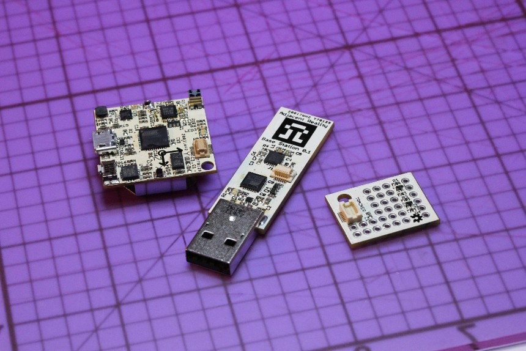

Adjacent Reality is on indefinite hold. The information below is mostly still relevant, and the source for the hardware and firmware will remain up on GitHub.
Adjacent Reality is a riff on Stuart Kauffman's adjacent possible. We formed it to explore and make possible the realities slightly adjacent to our own, primarily through hacks and inventions that bridge the virtual and the real.
In more grounded terms, we are building open source human computer interaction hardware and writing nifty software to go with it. Our first project is Tracker, a tiny, inexpensive, wirelessly interfaced inertial measurement unit, or motion/orientation tracker. The primary use case is virtual reality, but we are sure you can think of other fun ways to use it. We'll have more friendly documentation as the project gets closer to complete, but in the mean time, you can follow our progress on GitHub.
- Nirav Patel [eclecti.cc] and Donnie Cober [no online presence]